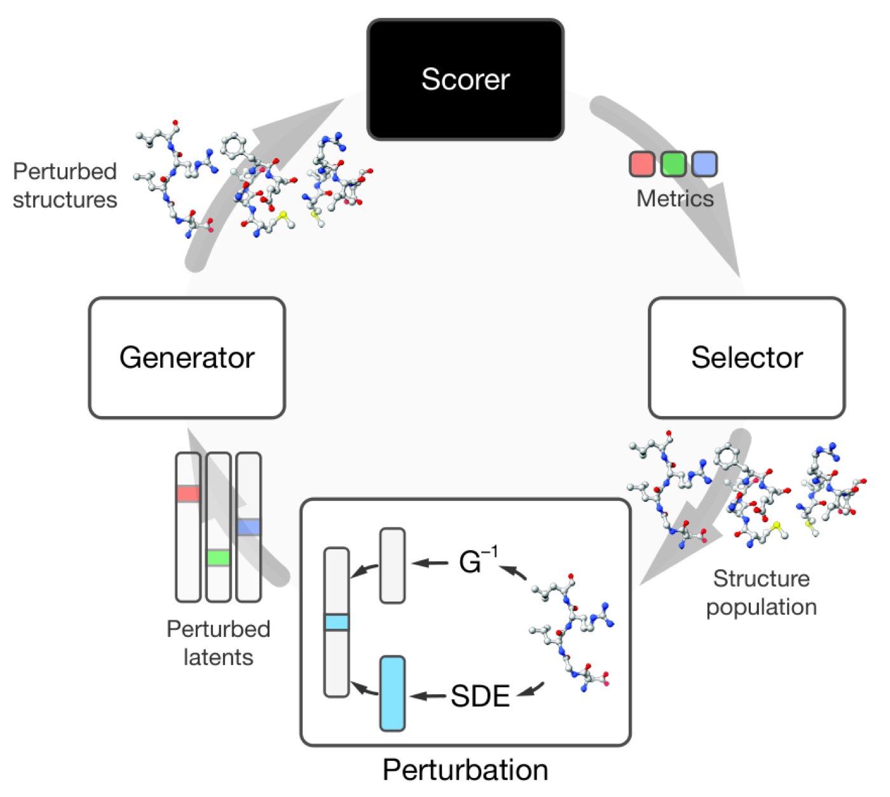
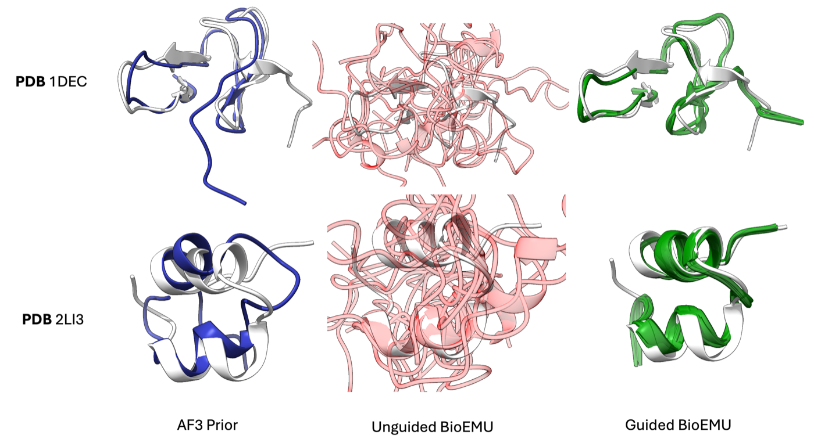
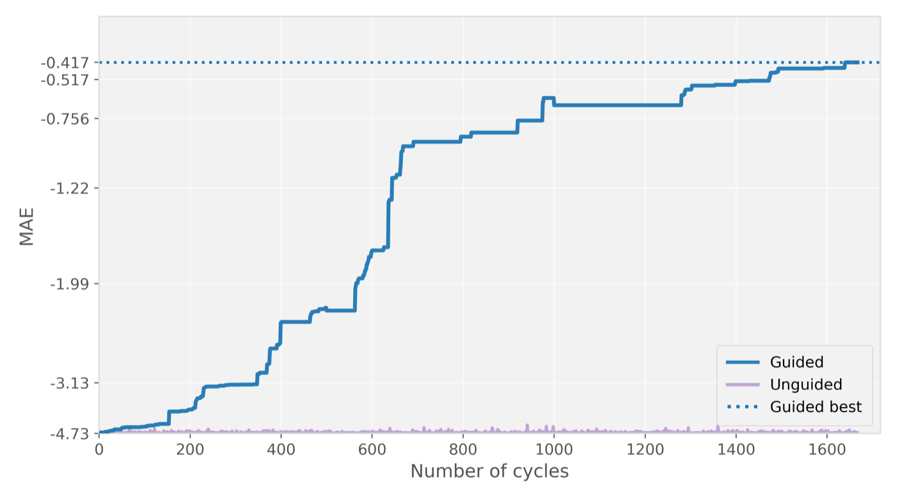

Seek and You Shall Fold
* Equal contribution.
- Problem
- Optimize generated protein structures against black-box, non-differentiable experimental scores.
- Prior
- BioEmu, with its sampler made deterministic (probability-flow ODE) so that latents reconstruct exactly.
- Method
- A genetic algorithm with residue-wise latent mutations, no crossover, and an annealed perturbation time.
- Evaluated on
- One pairwise-distance target, five NOE targets, and two chemical-shift targets.
- Main caveat
- Scores are computed on the optimization objective, and there is no comparison with gradient guidance or other black-box optimizers.
- My contribution
- I designed the residue-wise latent mutation operator, which aims to keep samples near the generator's learned manifold during the genetic search.
Demos marked Illustration are small simulations of the idea and do not run our models. Results from the work itself are in the figures marked From our paper and in the charts and tables.
1. The problem: useful signals with no gradient
Generative models can produce realistic protein structures, but they do not automatically agree with what a specific experiment measured. A popular fix is guidance: at each denoising step, follow the gradient of a score measuring agreement with the data. Our work on experiment-guided AlphaFold uses this approach.
That requires a differentiable path from structure to measurement. In NMR, the richest and most commonly measured signal is the chemical shift, the resonance frequency of a nucleus, which is highly sensitive to its local environment. Mature predictors such as UCBShift and SHIFTX2 estimate it from a structure, but they are not differentiable. So this signal has been very hard to use directly in structure generation.
2. Why not just approximate the gradient?
One option is to build a differentiable surrogate for every predictor. Even when that is possible, gradient guidance has practical weaknesses:
- Every new observable needs its own differentiable model.
- Gradients can be noisy or ill-conditioned, making convergence unstable.
- Guidance strength must be tuned against a fixed diffusion schedule.
- Samples can overfit noise and leave the manifold of valid proteins.
3. The idea: evolve in the generator's latent space
We treat the experiment as a black box: give it a structure, get back a number. The goal is to find
x* = argmaxx S(x), x = G(zT, 0)
where G is the generator and S any scoring function. The generator is BioEmu, a lightweight diffusion model trained to produce thermodynamically plausible structures. Searching in its latent space, rather than moving atoms directly, is intended to keep candidates close to realistic proteins.
Try it: search without a gradient Illustration
The heatmap is a score landscape built from flat steps, so its gradient is zero almost everywhere. The population starts on a lower peak. Each child changes one coordinate, like resampling one residue. With annealing, moves start broad and shrink over time. Turn it off to use one fixed, broad move size: the population can still escape, but it refines less well and reaches the top less often.
4. A genetic algorithm built for proteins

A textbook genetic algorithm would break proteins, since small changes in the wrong place can produce nonphysical structures. We make three changes:
- No crossover. Splicing two parents causes destabilizing global jumps.
- Residue-wise mutation in latent space. We take a parent partway back along the diffusion and resample the latent of one randomly chosen residue, as explained below.
- A perturbation-time schedule. The time tk moves toward the clean end of the diffusion across generations, shifting from broad exploration to fine refinement, much like annealing in molecular dynamics. In most runs the diffusion index starts at 0 (pure noise), advances by one every 4 generations, and is capped at 40 of 50. The harder chemical-shift runs use a tuned version of this schedule.
Each generation scores the population, keeps the best (elites), picks parents by tournament, and creates children. Unless noted otherwise, the search starts from an AlphaFold3 prediction. We used a population of 100, tournament size 5 and 5 elites, usually for 250 generations. A run took 1 to 3.5 hours on one H100 GPU with 30 CPU cores, excluding the slower chemical-shift runs.
Inside the mutation operator
A diffusion model defines a path of distributions pt that connects pure noise to protein structures. Each mutation takes the parent x partway back along this path to a time t, then returns to a structure. It uses two routes back, which have different jobs:
- 1. Deterministic latent (ODE). Integrating BioEmu's probability-flow ODE backward gives zt = G⁻¹(x, t). This latent remembers the parent: integrating forward again reconstructs x.
- 2. Stochastic latent (SDE). Running the forward noising SDE from x to the same time gives ẑt. It contains fresh noise, so it decodes to a different structure. The noisier t is, the further that structure can move from the parent.
- 3. Splice one residue. Choose a residue a uniformly at random and set zt[a] ← ẑt[a]. Every other residue keeps its deterministic latent, so it still carries the parent's information.
- 4. Decode. Integrate the ODE from t to 0 to get the child. The denoiser acts on the whole chain, so it can adjust the new residue and its neighbors together.
Watch one mutation Illustration
A toy 2-D chain under an exact Gaussian diffusion, not BioEmu. Each colored bar is a latent, with one cell per residue, and the chain beside it is the same latent drawn as a structure. Follow the red residue through both routes.
- Parent
- Go back
- Splice
- Decode
- Child
What this does not guarantee. The spliced latent combines coordinates from two different latents, so the correlations between residue a and the rest of the chain can differ from those of pt. The child is therefore not an exact sample from the generator. Selection also moves parents away from p₀, and the learned score and numerical solver are approximate. We expect children to stay close because only one residue changes, the denoiser reconciles it with its neighbors, and the swap becomes smaller as the schedule approaches the clean end. We did not directly measure how local the changes are or how close children stay to the manifold.
5. Test 1: pairwise distances
As a controlled warm-up, we used protein 4OLE, whose residues 60–68 (423–431 in the PDB's numbering) have two known conformations: a helix (A) and a strand (B). We derived Cα distance restraints from A and started the search from B. BioEmu alone resembles B and never reaches A. With guidance, the search recovered the helix.

6. Test 2: real NOE restraints
NOE signals indicate which protons are close in space. We scored structures with a non-differentiable metric: the fraction of violated restraints multiplied by their mean violation. On peptides 1DEC and 2LI3, AlphaFold3 contained misfolded regions and unguided BioEmu did not match the PDB, while the guided search reduced violations and recovered the experimental folds.

| Protein | PDB reference | AlphaFold3 | Guided (best) |
|---|---|---|---|
| 1DEC | 0.1279 | 1.0658 | 0.1184 |
| 2KKZ | 0.1445 | 0.2836 | 0.1492 |
| 1PQX | 0.0429 | 0.1409 | 0.0594 |
| 2LI3 | 0.0259 | 1.1002 | 0.0001 |
| 3BBG | 0.3200 | 0.7224 | 0.3180 |
From our paper. NOE loss = fraction violated × mean violation; lower is better. Best value in each row is highlighted.
Guidance beat the unguided AlphaFold3 prediction on all five targets, and was better than the PDB reference on three. The PDB reference remained better on 2KKZ (narrowly) and 1PQX.
7. Test 3: chemical shifts, and an honest negative result
This was the hardest test. We scored structures with UCBShift, using Cα shifts only, in two settings: synthetic shifts for 1DEC (generated from its PDB structure by UCBShift itself, so an exact solution exists under the scorer) and experimental shifts for 1DFU.

The guided search consistently improved the score, with far more generations than the other objectives (1,700 for 1DEC and 600 for 1DFU) and some plateaus at late stages. But the structures did not converge to the experimental ensemble. A better chemical-shift score did not mean a more accurate structure.
That is a useful finding. Guidance acts as a stress test of the predictor: it actively searches for structures that the predictor likes, and here those were not the right structures. This matches earlier evidence that UCBShift predictions carry limited structural signal, and it motivates more physically grounded predictors such as the one in our force-field representations work.
The predictor is not the only possible cause. In the synthetic 1DEC run, the PDB structure has zero error by construction, yet the search stopped at a mean absolute error of about 0.42 ppm. So BioEmu's reachable space and the search itself also limit the result, and this experiment does not separate the three.
8. How to read these results
- The reported metric is the objective. Table values are the best structure in the population under the same score used for selection. A near-zero loss, as for 2LI3, shows that the restraints are satisfied, and is not evidence of a more accurate structure than the PDB.
- Missing baselines. We compare with unguided BioEmu and AlphaFold3, but not with gradient guidance on differentiable objectives, random search, or optimizers such as CMA-ES. The value of the tailored operators over simpler search is therefore not yet isolated.
- Query cost. A 250-generation run with a population of 100 can use up to about 25,000 structure evaluations, so the method suits objectives where gradients are unavailable, not those where they are cheap.
- Small scale. This is a workshop proof of concept on a handful of targets, with experimental chemical shifts tested on one protein.
9. Limitations and what comes next
- The generator limits the search. BioEmu constrains which conformations can be reached.
- The signal limits the result. Chemical-shift guidance is feasible, but it needs better predictors to produce accurate structures.
- Single best structures. We report the best structure in the population. Ensemble-level objectives are future work.
- Next: stronger priors, physically informed shift models, and other data such as cryo-EM and crosslinking.
Takeaways
- Guidance does not need gradients. A pretrained generator plus population search can improve black-box objectives, at a much higher query cost.
- Search where the data manifold is easy to stay on. Local edits in a generator's latent space are designed to keep candidates plausible.
- Optimizing against a predictor reveals its flaws. A high score is only as meaningful as the scorer.
Glossary
Show the glossary
- BioEmu: a diffusion model that generates near-equilibrium protein structures.
- Genetic algorithm: a search that evolves a population through selection and mutation.
- Latent: the internal representation a generator decodes into a structure.
- NOE: an NMR effect indicating that two protons are close in space.
- Chemical shift: a nucleus's resonance frequency relative to a reference, sensitive to its local environment.
- Cα: the central backbone carbon of an amino acid.
Citation
BibTeX
@article{sellam2025seek,
title = {Seek and You Shall Fold},
author = {Sellam, Nadav Bojan and Bojan, Meital and Schanda, Paul and Bronstein, Alex},
journal = {arXiv preprint arXiv:2511.13244},
year = {2025}
}